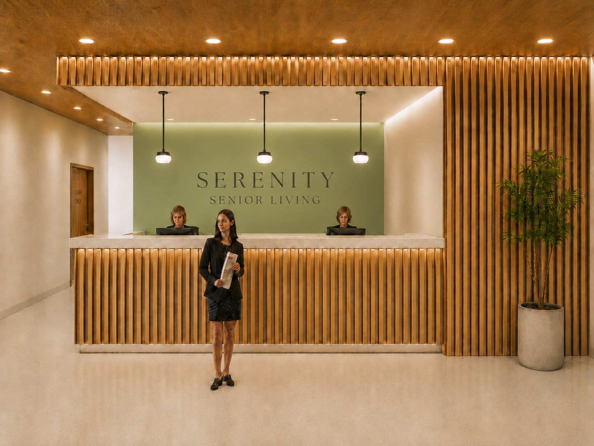
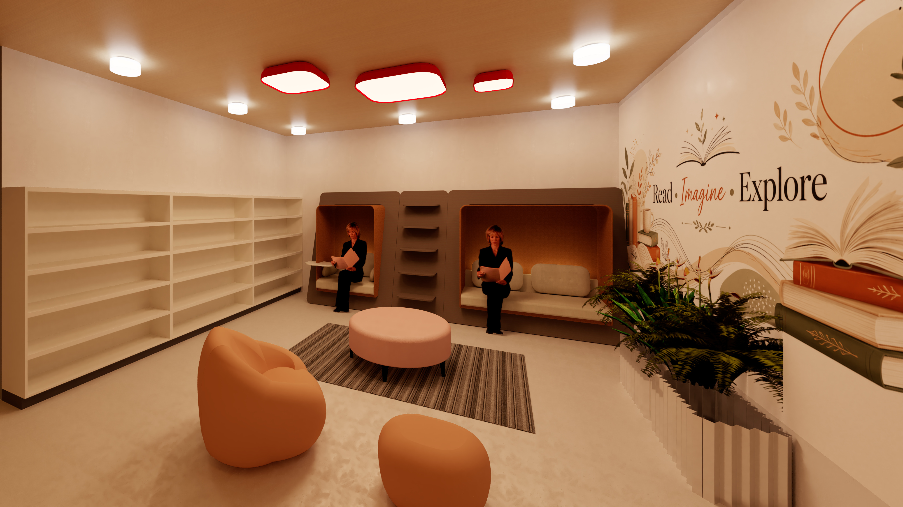
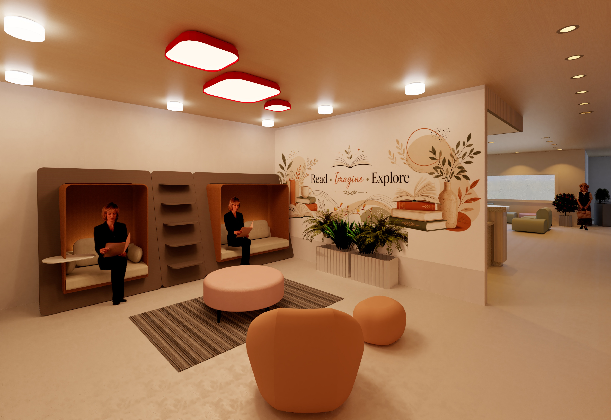
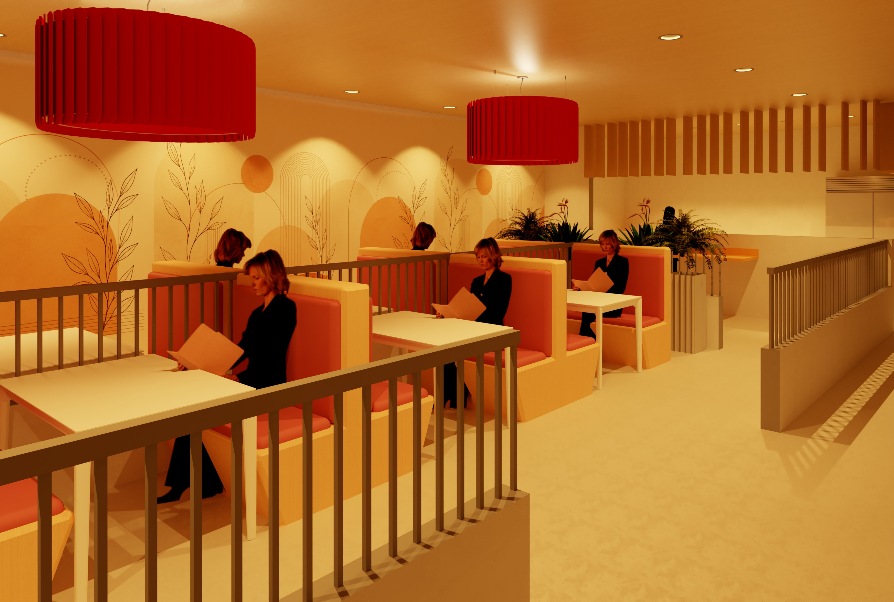

"Rooted in Nature, Nourished by Community" — Schematic Design Phase
Project Overview
Course: ARCH X413.8 Space Planning and Programming
Role: Student Designer
Facility Size: ~12,500 square feet
Status: Academic Project | UC Berkeley Extension | Spring 2026

Design Concept
The design draws from the biophilic principle — connecting residents to natural light, organic textures, and serene greenery. Circulation flows from public to private like a quiet retreat: arrival → community → dwelling.
Natural materials — warm wood, stone, and woven textiles — are layered with soft greenery to blur the line between inside and outside.
Parti & Spatial Organization
The spatial concept is organized around three concentric zones:
Public Core: Lobby, reception, dining, and library at the center — the social heart of the facility
Acoustic Buffer: Staff zones (lounge, admin) insulated from residential corridors
Private Ring: Residential suites wrap the perimeter for maximum natural light and privacy
Focus Areas
Lobby & Reception — 1,227 SF
The arrival experience — where calm begins. Curved seating, biophilic plantings, and a "Welcome — We're Glad You're Here" wall mural create a warm, dignified first impression.
Library & Café
"Read · Imagine · Explore" — An intimate sanctuary for discovery. High-back reading nooks provide semi-private cocoon-like seating, with rounded lounge furniture, biophilic plantings, and a hand-painted botanical mural creating a sense of warmth and intellectual engagement.


Dining Room — 1,177 SF
Warm, communal dining with biophilic booth seating. Cleanable vinyl banquettes in warm coral tones, planter dividers between tables for privacy, pendant drum lights, and a botanical wall mural create a residential-quality dining experience.

Materials & FF&E
Furniture, fixtures, and finish selections support a calm, durable, biophilic senior-living environment.
Applied universal-design thinking throughout the facility:
High-contrast counter edges for visual orientation
Chairs with arms for sit-to-stand support
Clear circulation and wheelchair approach zones
Cognitive wayfinding through color, signage, and spatial cues
Visual contrast between surfaces for safety
Dignified and intuitive spatial navigation
Biophilic Design Integration
The biophilic concept is woven throughout — indoor plantings, botanical murals, natural material textures, warm wood tones, views to nature, and soft organic furniture forms create a connection to the natural world that supports resident wellbeing, comfort, and sense of place.
AI Disclosure
One reception desk perspective was enhanced using an AI image generation tool to add the "Serenity Senior Living" text to the sage green feature wall. The original source was a Revit elevation. All other renderings are Revit-rendered perspectives.
Skills Demonstrated
Space PlanningProgrammingSchematic DesignSenior Living DesignAdjacency DiagramsParti DevelopmentFurniture PlanningFF&E SelectionMaterials & FinishesUniversal DesignADA AwarenessBiophilic DesignInterior ElevationsRevit RenderingEvidence-Based DesignDesign Communication
Reflection
[Insert reflection on key learnings about programming, accessibility research, biophilic design principles, and designing for aging populations]